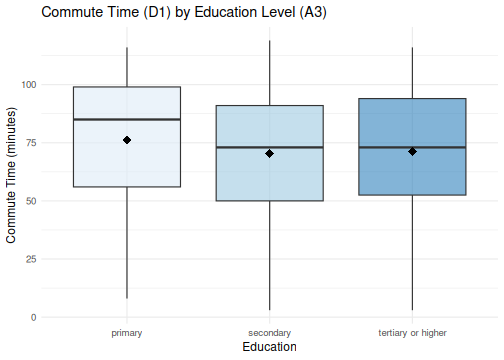
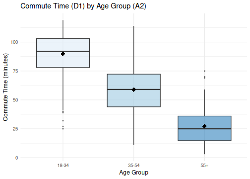
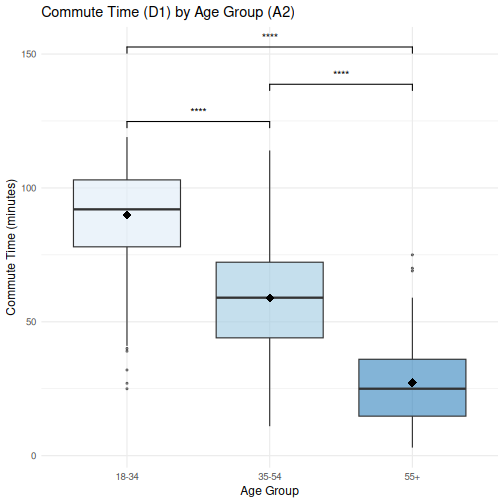
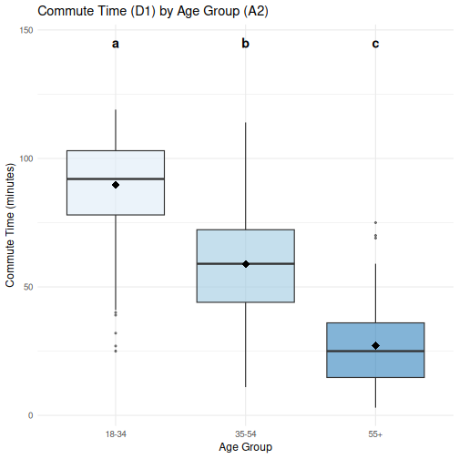
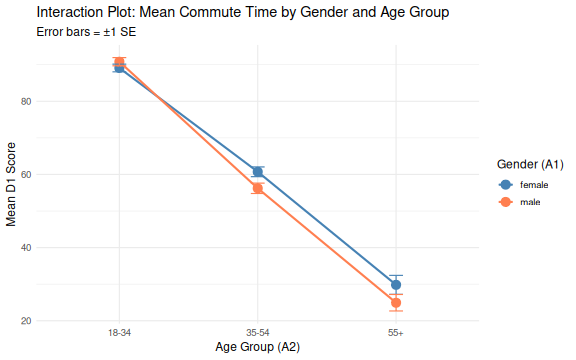
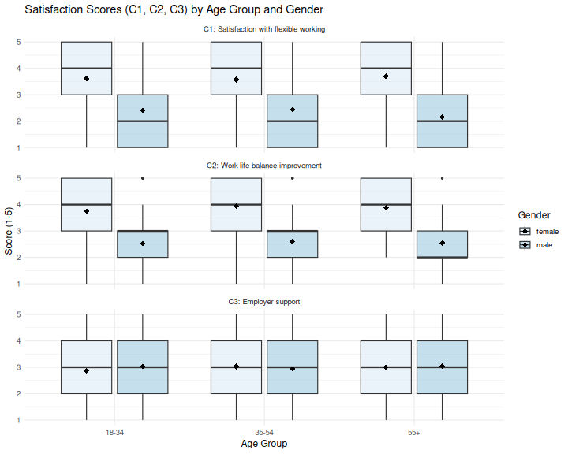
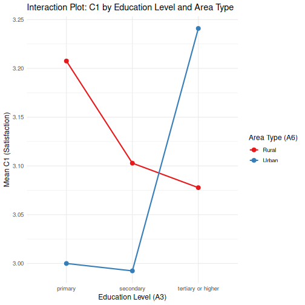

ANOVA tests in R
Last updated on 2026-05-27 | Edit this page
Estimated time: 90 minutes
Overview
Questions
- What
ANOVAshould I use? - How do I check whether my data meet the assumptions of these tests?
Objectives
- Select the appropriate
ANOVAvariant for a given research design using the decision framework - Check the assumptions required for each
ANOVAtype - Explain when and why
ANOVAis preferred over running multiplet-tests - Run a
one-way ANOVA,Welch's ANOVAandMANOVA - Apply appropriate post-hoc tests (
Tukey HSD,Games-Howell,emmeanswithBonferroni) following a significant result - Follow up a significant
MANOVAwith univariateANOVAsper dependent variable - Accurately report results
Other materials
See Workshop 7 recording here - 1
Dataset overview
This workshop uses a generated (made-up) dataset of 1,005
survey responses on flexible working and work-life balance. The
cleaned .rds file preserves all factor levels and ordered
factors set in a previous
lesson 5. Quantitative Data Analysis in R.
Survey schema (variables used in this workshop)
| Section | Variable | Type | Description |
|---|---|---|---|
| A (Demographics) | A1 – Gender | Factor (male, female) | What is your gender? |
| A2 – Age Group | Ordered Factor (18–34, 35–54, 55+) | What is your age? | |
| A3 – Education | Ordered Factor (primary, secondary, tertiary+) | Highest level of education? | |
| A4 – Income | Ordered Factor (low, middle, high) | Annual income level? | |
| A6 – Area Type | Factor (Rural, Urban) | Urban or rural residence? | |
| C (Satisfaction) | C1 | Integer (1–5) | Satisfaction with flexible working arrangements |
| C2 | Integer (1–5) | Extent flex working improves work-life balance | |
| C3 | Integer (1–5) | Employer support for flexible working in practice | |
| D (Commute) | D1 | Numeric | Commute time to work (minutes) |
| D2 | Numeric | Commute distance (km) |
Why ANOVA?
When you want to compare means across three or more
groups, running multiple t-tests is not
appropriate. It inflates the Type I error rate (false positive rate)
with every additional comparison. ANOVA tests all group
differences simultaneously with a single omnibus F-test,
keeping the error rate under control.
The F-statistic
The F-statistic is the ratio of between-group
variance to within-group variance:
\[F = \frac{\text{Mean Square Between}}{\text{Mean Square Within}}\]
A large $F$ indicates that the group means differ more
than would be expected by chance alone. The F-test is
omnibus: it tells you that at least one group differs, but not
which groups. Post-hoc tests answer the question of
which groups differ.
Omnibus tests
An omnibus test is an overall test that asks whether there are any
significant differences among a set of groups or variables, without
specifying where those differences lie. In the context of
ANOVA, the F-test is omnibus: a significant
result tells you that at least one group mean differs from the others,
but not which specific pairs are different.
Think of it as a first screening step: if the omnibus test is
non-significant, you stop; if it is significant, you follow up with
post-hoc tests (such as Tukey HSD) to pinpoint exactly
where the differences are.
The type of ANOVA you choose depends on your study
design. Use the questions below to find the right test.
Which ANOVA?
1. How many independent variables (factors) do you have?
- One factor, comparing means across 3+ groups → proceed to Question 2
-
Two factors, testing main effects and/or an
interaction →
Two-way ANOVA -
Two or more factors, multiple outcome variables →
MANOVA
Example 1 (one factor): Does commute time (D1) differ across age groups (18–34, 35–54, 55+)?
Example 2 (two factors): Does commute time (D1) differ across age group and gender: tests both main effects and their interaction.
Example 3 (MANOVA): Do gender and age group simultaneously affect satisfaction with flexible working (C1), work-life balance (C2), and employer support (C3)?
2. Are the same participants measured more than once?
-
Yes: same subjects in every condition
(within-subjects design) →
Repeated Measures ANOVA - No: different participants in each group (between-subjects design) → proceed to Question 3
Repeated measures controls for individual differences, increasing statistical power. Common in longitudinal studies, pre/post designs, and within-subject experiments.
3. Is homogeneity of variance met?
Check with Levene’s test
-
Yes: variances are roughly equal across groups →
One-way ANOVA -
No: variances differ significantly across groups →
Welch's ANOVA
Welch's ANOVA does not assume equal variances. It
adjusts the degrees of freedom (Welch–Satterthwaite
equation) to account for heteroscedasticity. It is often recommended as
the default over classical one-way ANOVA, since it performs
well even when variances are equal.
4. Do you have both within- and between-subjects factors?
-
Yes: one factor is within-subjects, another is
between-subjects →
Mixed ANOVA - No: all factors are the same type → stay with your choice above
Example: Measuring blood pressure at three time points (within) across a treatment vs control group (between).
5. Check your assumptions
One-way & Two-way ANOVA
| Assumption | How to check | If violated |
|---|---|---|
| Normality of residuals |
Shapiro-Wilk test, Q-Q plot
|
Kruskal-Wallis (non-parametric) |
| Homogeneity of variance | Levene’s test | Use Welch's ANOVA
|
| Independence of observations | Study design | Reconsider design |
Note on sample size: When group sizes exceed n = 30,
the Central Limit Theorem provides sufficient protection against mild
normality violations. Shapiro-Wilk becomes overly sensitive
in large samples and should be interpreted alongside a Q-Q
plot rather than in isolation.
Welch's ANOVA
| Assumption | How to check | If violated |
|---|---|---|
| Normality of residuals |
Shapiro-Wilk test, Q-Q plot |
Games-Howell post hoc is robust to mild violations |
| Independence of observations | Study design | Reconsider design |
Welch's ANOVA relaxes the homogeneity
of variance assumption; no Levene's test required
beforehand.
Repeated Measures ANOVA
| Assumption | How to check | If violated |
|---|---|---|
| Normality of residuals |
Shapiro-Wilk, Q-Q plot |
Friedman test (non-parametric) |
| Sphericity |
Mauchly's test |
Apply Greenhouse-Geisser ε correction |
| No extreme outliers | Boxplots per condition | Investigate and consider exclusion |
Sphericity is the most commonly overlooked assumption. If
Mauchly's test is significant (p < .05), apply
the Greenhouse-Geisser correction rather than abandoning
the analysis.
MANOVA
| Assumption | How to check | If violated |
|---|---|---|
| Multivariate normality |
mvn() from MVN package, Q-Q
plot |
Proceed with caution if n is large |
| Homogeneity of covariance matrices | Box's M test |
Use Pillai's Trace (most robust statistic) |
| No multivariate outliers | Mahalanobis distance | Investigate and consider exclusion |
| No multicollinearity between DVs | Correlation matrix | DVs should be related but r < .90 |
| Independence of observations | Study design | Reconsider design |
6. Post-hoc tests after a significant result
| Situation | Recommended test | Notes |
|---|---|---|
One-way ANOVA, equal group sizes |
Tukey HSD |
Assumes equal variances and balanced groups |
One-way ANOVA, unequal group sizes |
Bonferroni correction |
More conservative but appropriate for small number of comparisons |
Welch's ANOVA |
Games-Howell |
Does not assume equal variances; use instead of Tukey HSD |
Two-way ANOVA, no significant interaction |
emmeans with Bonferroni
|
Interpret main effects only; marginal means adjusted for other factor |
Two-way ANOVA, interaction present |
emmeans simple main effects with Bonferroni |
Do not interpret main effects in isolation; localise the interaction |
MANOVA (significant overall) |
Separate ANOVA per dependent variable, then emmeans
with Bonferroni
|
Follow up only on dependent variables that drive the multivariate effect |
| Multiple outcome variables tested simultaneously | FDR (Benjamini-Hochberg) |
Controls false positive rate across a family of tests |
Repeated measures ANOVA |
Pairwise comparisons with Bonferroni
|
Adjust within the within-subjects factor |
Mixed ANOVA |
emmeans with Bonferroni per factor |
Separate comparisons for between- and within-subjects factors |
7. Non-parametric alternatives
Use these when normality is not met and sample sizes are small.
| Parametric test | Non-parametric alternative |
|---|---|
One-way ANOVA |
kruskal.test() — Kruskal-Wallis
|
| Repeated measures ANOVA |
friedman.test() — Friedman test |
Two-way ANOVA |
Aligned Ranks Transformation (ARTool package) |
MANOVA |
Adonis (permutation-based; vegan
package) |
ANOVA Summary table
| Test | Factors | Design | Equal variances required? | Recommended post-hoc | Notes |
|---|---|---|---|---|---|
One-way ANOVA |
1 | Between-subjects | Yes |
Tukey HSD (equal groups); Bonferroni (unequal
groups) |
Check Levene’s test first |
Welch's ANOVA |
1 | Between-subjects | No | Games-Howell |
Robust alternative to one-way ANOVA when variances are unequal |
Two-way ANOVA (no interaction) |
2 | Between-subjects | Yes |
emmeans with Bonferroni
|
Interpret main effects only; use Type II SS for unbalanced designs |
Two-way ANOVA (interaction present) |
2 | Between-subjects | Yes |
emmeans simple main effects with
Bonferroni
|
Do not interpret main effects in isolation; localise interaction |
Repeated measures ANOVA |
1+ | Within-subjects | Yes (+ sphericity) |
Bonferroni pairwise |
Check Mauchly's test for sphericity; use
Greenhouse-Geisser correction if violated |
Mixed ANOVA |
2+ | Within + between | Yes (+ sphericity) |
emmeans with Bonferroni per factor |
Separate comparisons for between- and within-subjects factors |
MANOVA |
2+ | Between-subjects | Yes |
emmeans or discriminant analysis |
Use when multiple dependent variables are correlated |
Kruskal-Wallis |
1 | Between-subjects | No (non-parametric) | Dunn test with Bonferroni
|
Use when normality or equal variance assumptions are severely violated |
Friedman |
1 | Within-subjects | No (non-parametric) |
Wilcoxon signed-rank with Bonferroni
|
Non-parametric equivalent of
repeated measures ANOVA
|
Set up
Start by opening your intro_r RStudio project and start
a new R Notebook (File → New File → R Notebook). Save it as
anova.Rmd in your scripts folder. Ensure your
global environment is empty! You can also
sweep’your global environment by clicking the
broom icon.
When you open a new R Notebook, some explanatory text is
provided. This can be deleted so you can enter your own text and
code.
Load packages and data
Download packages (if needed) and load libraries.
R
for (pkg in c("tidyverse", "here", "rstatix", "effectsize", "ggsignif", "emmeans")) {
if (!requireNamespace(pkg, quietly = TRUE)) install.packages(pkg)
}
library(tidyverse)
library(here)
library(effectsize) # for repeated_measures_d
library(rstatix) # tidy statistical tests
library(ggsignif) # significance displayed on ggplots
library(emmeans)
Read in the cleaned survey data that was processed in the previous workshop.
Download the data first if you need to.
R
download.file("https://raw.githubusercontent.com/IRIM-Mongolia/irim-r-workshops/main/episodes/data/cleaned/generated_survey_data_clean.rds", here("data/cleaned/generated_survey_data_clean.rds"), mode = "wb")
R
survey <- readRDS(here("data", "cleaned", "generated_survey_data_clean.rds"))
survey
OUTPUT
# A tibble: 1,005 × 28
A1 A2 A3 A4 A5 A6 B1 B1_1 B1_2 B1_3 B1_4 B1_5 B2
<fct> <ord> <ord> <ord> <fct> <fct> <chr> <lgl> <lgl> <lgl> <lgl> <lgl> <chr>
1 male 18-34 seco… low regi… Urban <NA> FALSE FALSE FALSE FALSE FALSE 1 4 7
2 male 35-54 seco… midd… regi… Rural 2 4 5 FALSE TRUE FALSE TRUE TRUE 1 4 6
3 fema… 35-54 tert… low regi… Rural 2 3 4 FALSE TRUE TRUE TRUE FALSE 3 6 7
4 male 18-34 tert… low regi… Urban 5 FALSE FALSE FALSE FALSE TRUE 3 5 8
5 male 35-54 seco… high regi… Rural 5 FALSE FALSE FALSE FALSE TRUE 2 5 6
6 fema… 18-34 tert… high regi… Urban 1 3 5 TRUE FALSE TRUE FALSE TRUE 3 6
7 male 35-54 seco… high regi… Urban 2 4 5 FALSE TRUE FALSE TRUE TRUE 2 6 7
8 fema… 18-34 tert… midd… regi… Rural 3 4 5 FALSE FALSE TRUE TRUE TRUE 6 7 8
9 male 18-34 tert… low regi… Urban 2 4 FALSE TRUE FALSE TRUE FALSE 2 5 8
10 male 18-34 prim… midd… regi… Urban 5 FALSE FALSE FALSE FALSE TRUE 5 8
# ℹ 995 more rows
# ℹ 15 more variables: B2_1 <lgl>, B2_2 <lgl>, B2_3 <lgl>, B2_4 <lgl>,
# B2_5 <lgl>, B2_6 <lgl>, B2_7 <lgl>, B2_8 <lgl>, C1 <dbl>, C2 <dbl>,
# C3 <dbl>, D1 <dbl>, D2 <dbl>, E1 <ord>, E2 <chr>
One-way ANOVA and Welch's ANOVA
Test 1: Research question: Does commute time (D1) differ across level of education? (primary, secondary, tertiary or higher)?
Assumptions
- Observations are independent.
- The continuous variable is approximately normally distributed within each group, or each group has n > 30.
- Equal variances across groups (check with
Levene's test).
Let’s produce some summary statistics that we can use in our reporting, and check the sample sizes.
R
survey %>%
group_by(A3) %>%
summarise(
n = n(),
mean = round(mean(D1, na.rm = TRUE), 1),
sd = round(sd(D1, na.rm = TRUE), 1)
)
OUTPUT
# A tibble: 3 × 4
A3 n mean sd
<ord> <int> <dbl> <dbl>
1 primary 101 76.3 27.5
2 secondary 545 70.3 27.6
3 tertiary or higher 359 71.3 27 Sample sizes for each education group are large (>30), so normality is assumed under the central limit theorem.
Exploratory plot
We’ll use a box plot to plot the distributions of the three age groups.
R
survey %>%
group_by(A3) %>%
mutate(group_mean = mean(D1, na.rm = TRUE)) %>%
ggplot(aes(x = A3, y = D1, fill = A3)) +
geom_boxplot(alpha = 0.6, outlier.size = 0.8) +
stat_summary(fun = mean, geom = "point", shape = 18,
size = 4, colour = "black") +
labs(title = "Commute Time (D1) by Education Level (A3)",
x = "Education", y = "Commute Time (minutes)") +
scale_fill_brewer(palette = "Blues") +
theme_minimal(base_size = 12) +
theme(legend.position = "none")

Respondents with a primary education appear to have slightly higher commute times, let’s continue to see if the differences are statistically significant.
Check equal variances
R
survey %>%
levene_test(D1 ~ A3)
OUTPUT
# A tibble: 1 × 4
df1 df2 statistic p
<int> <int> <dbl> <dbl>
1 2 1002 0.0643 0.938A Levene's test p-value of > 0.05 means we accept the
assumption of equal variances (homogeneity of variance) across groups.
We can run the the standard one-way ANOVA.
Run the one-way ANOVA
R
aov_d1_a3 <- survey %>%
anova_test(D1 ~ A3, detailed = TRUE)
aov_d1_a3
OUTPUT
ANOVA Table (type II tests)
Effect SSn SSd DFn DFd F p p<.05 ges
1 A3 3016.859 748535.8 2 1002 2.019 0.133 0.004Reading one-way ANOVA output
The output contains:
- Effect: the predictor variable being tested
- SSn (Sum of Squares Numerator): the variance in the dependent variable that is explained by the predictor group differences; this is the between-group variance
- SSd (Sum of Squares Denominator): the variance in the dependent variable that is not explained by the predictor group differences, i.e., the residual/error variance; this is the within-group variance
- DFn: degrees of freedom for the numerator, equal to the number of groups minus one
- DFd: degrees of freedom for the denominator, equal to the total sample size minus the number of groups
- F: the F-statistic, calculated as (SSn/DFn) ÷ (SSd/DFd); a ratio of between-group to within-group variance; if it is small, it indicates group means are not meaningfully separated relative to within-group spread
- p: the p-value
- p<.05: a flag column that marks significant effects with an asterisk; if blank, confirms non-significance
- ges: (Generalised Eta-Squared), the effect size estimate, representing the proportion of total variance in the dependent varible explained by the predictor.
| GES | Interpretation |
|---|---|
| 0.01 | Small |
| 0.06 | Medium |
| 0.14 | Large |
| >0.14 | Very large |
Post-hoc tests: Tukey HSD
After a significant ANOVA, the Tukey Honest
Significant Difference (HSD) test compares all pairs of group
means while controlling for the familywise error rate.
Our one-way ANOVA above did not produce a significant
result (p = 0.133), so the below code is just a demonstration of how to
run a tukey_hsd test from the rstatix
package.
R
survey %>%
tukey_hsd(D1 ~ A3)
OUTPUT
# A tibble: 3 × 9
term group1 group2 null.value estimate conf.low conf.high p.adj p.adj.signif
* <chr> <chr> <chr> <dbl> <dbl> <dbl> <dbl> <dbl> <chr>
1 A3 primary secon… 0 -5.95 -12.9 1.000 0.11 ns
2 A3 primary terti… 0 -5.02 -12.2 2.20 0.233 ns
3 A3 second… terti… 0 0.926 -3.43 5.29 0.872 ns Reporting checklist for
one-way ANOVA (and Welch's)
- Research question and the grouping variable
- Group means and SDs
- Levene’s test result (assumption check)
- F-statistic, degrees of freedom, p-value: F(df_between, df_within) = X.XX
- Post-hoc comparisons (Tukey HSD) if significant
- Effect size (ges) with interpretation
Example sentence: A one-way ANOVA was conducted to
examine the effect of education level (A3) on daily commute time (D1)
after equal variances were confirmed by Levenes test. The
result was not statistically significant, F(2, 1002) = 2.019, p = 0.133,
indicating that commute time did not differ meaningfully across highest
education level (primary: mean = 76.3 minutes, std = 27.5; secondary:
mean = 70.3 minutes, std = 27.6; tertiary or higher: 71.3 minutes, std =
27.0).
The generalised eta-squared value (ges = 0.004) confirmed a negligible effect size, with education level accounting for less than 1% of the variance in daily commute time, suggesting that education has no practical relationship with how long respondents commute each day.
Test 2: Research question: Does commute time (D1) differ across age groups (18–34, 35–54, 55+)?
Summary statistics
Let’s start by looking at the summary statistics
R
survey %>%
group_by(A2) %>%
summarise(
n = n(),
mean = round(mean(D1, na.rm = TRUE), 1),
sd = round(sd(D1, na.rm = TRUE), 1)
)
OUTPUT
# A tibble: 3 × 4
A2 n mean sd
<ord> <int> <dbl> <dbl>
1 18-34 497 89.8 17.2
2 35-54 416 58.9 20
3 55+ 92 27.2 16.4Sample sizes are all >30.
Exploratory plot
We’ll use a box plot to plot the distributions of the three age groups.
R
survey %>%
group_by(A2) %>%
mutate(group_mean = mean(D1, na.rm = TRUE)) %>%
ggplot(aes(x = A2, y = D1, fill = A2)) +
geom_boxplot(alpha = 0.6, outlier.size = 0.8) +
stat_summary(fun = mean, geom = "point", shape = 18,
size = 4, colour = "black") +
labs(title = "Commute Time (D1) by Age Group (A2)",
x = "Age Group", y = "Commute Time (minutes)") +
scale_fill_brewer(palette = "Blues") +
theme_minimal(base_size = 12) +
theme(legend.position = "none")

A clear pattern is visible: younger respondents appear to have longer commutes than older ones.
Check equal variances
R
survey %>%
levene_test(D1 ~ A2)
OUTPUT
# A tibble: 1 × 4
df1 df2 statistic p
<int> <int> <dbl> <dbl>
1 2 1002 7.47 0.000604A Levene's test p-value of < 0.05 means we reject the
assumption of equal variances (homogeneity of variance) across groups.
We will need to run Welch's ANOVA instead of the standard
one-way ANOVA.
Run the Welch's ANOVA
We’ll use the welch_anova_test function from the
rstatix package.
R
# Welch's ANOVA
waov_d1_a2 <- survey %>% welch_anova_test(D1 ~ A2)
waov_d1_a2
OUTPUT
# A tibble: 1 × 7
.y. n statistic DFn DFd p method
* <chr> <int> <dbl> <dbl> <dbl> <dbl> <chr>
1 D1 1005 695. 2 263. 9.81e-106 Welch ANOVAReading welch_anova_test
output
The output contains:
- .y.: the dependent variable being tested
- n: total sample size across all groups
- statistic: the F-statistic, representing the ratio of variance between groups to variance within groups; a larger value indicates greater separation between group means relative to within-group spread
- DFn: degrees of freedom for the numerator, equal to the number of groups minus one
-
DFd: degrees of freedom for the denominator; in
Welch's ANOVAthis is a fractional value estimated using theWelch-Satterthwaitecorrection, rather than the standard n − k, to account for unequal variances across groups - p: the p-value, indicating the probability of observing an F-statistic this large by chance alone
- method: confirms the test used
The Welch's ANOVA is highly significant: F(2,
263.11) = 695.1, p < 0.001. The mean daily commute time
decreases with age; 18–34: 89.8 min, 35–54: 58.9 min, 55+: 27.2 min. But
the F-test alone cannot tell us whether all three pairwise
differences are significant. We need a post-hoc test. For
Welch's ANOVA, we can use the Games-Howell
post-hoc test.
Post-hoc tests: Games-Howell
R
# Post-hoc: Games-Howell (does not assume equal variances)
survey %>%
games_howell_test(D1 ~ A2)
OUTPUT
# A tibble: 3 × 8
.y. group1 group2 estimate conf.low conf.high p.adj p.adj.signif
* <chr> <chr> <chr> <dbl> <dbl> <dbl> <dbl> <chr>
1 D1 18-34 35-54 -30.9 -33.9 -28.0 8.28e-14 ****
2 D1 18-34 55+ -62.6 -67.1 -58.1 3.64e-14 ****
3 D1 35-54 55+ -31.7 -36.3 -27.0 0 **** Reading games_howell_test
output
The output contains: - y.: the dependent variable - group1 / group2: the two groups being compared in each pairwise test - estimate: the mean difference between group1 and group2; negative values indicate group1 has a lower mean than group2 - conf.low / conf.high: the lower and upper bounds of the 95% confidence interval around the mean difference; if none of the intervals cross zero, it confirms all differences are significant - p.adj: the adjusted p-value after correction for multiple comparisons - p.adj.signif: a significance stars label, providing a quick visual indicator of the strength of evidence
Effect size
Unfortunately, the Welch's ANOVA output does not report
the effect size, so we’ll have to calculate the generalised eta-squared
value.
R
# extract values from waov_d1_a2
F_val <- waov_d1_a2$statistic
DFn <- waov_d1_a2$DFn
DFd <- waov_d1_a2$DFd
eta_sq <- (F_val * DFn) / (F_val * DFn + DFd)
round(eta_sq, 3)
OUTPUT
F
0.841 The Games-Howell post-hoc test reveals that the mean
commute times of all age groups are statistically significantly
different from each other, and the ges value confirms the effect size is
very large. Putting this all together:
“A Welch's one-way ANOVA was conducted after equal
variances were not confirmed by Levenes test. The results
revealed a statistically significant effect of age group on daily
commute time, F(2, 263.11) = 695.1, p < 0.001, with mean commute
times decreasing across age groups (18–34: mean = 89.8 minutes, std =
17.2; 35–54: mean = 58.9 minutes, std = 20.0; 55+: mean = 27.2 minutes,
std = 16.4).
Games-Howell post-hoc tests indicated that all three
pairwise comparisons were statistically significant (p < 0.001):
18–34 year-olds reported significantly longer daily commute times than
both 35–54 year-olds (mean difference = 30.93 min, 95% CI [27.99,
33.87], p < 0.001) and those aged 55+ (mean difference = 62.60 min,
95% CI [58.15, 67.06], p < 0.001), and 35–54 year-olds reported
significantly longer commute times than those aged 55+ (mean difference
= 31.67 min, 95% CI [27.00, 36.34], p < 0.001).
The generalised eta-squared value is very large (0.841), confirming that age group explains over 84% of the variance in commute time.”
Plotting significant differences
We can use the geom_signif function from the
ggsignif package to plot the levels of significance
directly on the graph:
R
survey %>%
group_by(A2) %>%
mutate(group_mean = mean(D1, na.rm = TRUE)) %>%
ggplot(aes(x = A2, y = D1, fill = A2)) +
geom_boxplot(alpha = 0.6, outlier.size = 0.8) +
stat_summary(fun = mean, geom = "point", shape = 18,
size = 4, colour = "black") +
geom_signif(
comparisons = list(c("18-34", "35-54"),
c("35-54", "55+"),
c("18-34", "55+")),
annotations = c("****", "****", "****"),
step_increase = 0.12, # vertical spacing between brackets
tip_length = 0.02,
textsize = 4
) +
labs(title = "Commute Time (D1) by Age Group (A2)",
x = "Age Group", y = "Commute Time (minutes)") +
scale_fill_brewer(palette = "Blues") +
theme_minimal(base_size = 12) +
theme(legend.position = "none")

Or, we can use the geom_text function to label the
groups.
R
# Compact letter display data frame
cld_labels <- data.frame(
A2 = factor(c("18-34", "35-54", "55+"), levels = c("18-34", "35-54", "55+")),
label = c("a", "b", "c"),
y = c(145, 145, 145) # adjust height to sit above the boxplot whiskers
)
survey %>%
group_by(A2) %>%
mutate(group_mean = mean(D1, na.rm = TRUE)) %>%
ggplot(aes(x = A2, y = D1, fill = A2)) +
geom_boxplot(alpha = 0.6, outlier.size = 0.8) +
stat_summary(fun = mean, geom = "point", shape = 18,
size = 4, colour = "black") +
geom_text(data = cld_labels, aes(x = A2, y = y, label = label),
inherit.aes = FALSE, size = 5, fontface = "bold") +
labs(title = "Commute Time (D1) by Age Group (A2)",
x = "Age Group", y = "Commute Time (minutes)") +
scale_fill_brewer(palette = "Blues") +
theme_minimal(base_size = 12) +
theme(legend.position = "none")

Failing to reject H₀ is a valid result
A non-significant ANOVA does not mean “nothing
happened”- it means the data provides insufficient evidence of a
difference. Report it clearly, including the F-statistic and effect
size. A small effect size (ges) adds useful information: the predictor
contributes essentially nothing to variance in the dependent
variable.
Two-Way ANOVA
A two-way ANOVA extends the one-way design by including
two categorical factors simultaneously. It allows us to
test:
- The main effect of Factor A (holding Factor B constant)
- The main effect of Factor B (holding Factor A constant)
- The interaction effect of A × B: whether the effect of one factor depends on the level of the other
Interactions are the most interesting and often the most important result. An interaction means that a simple statement like “females are more satisfied” may be incomplete: the gender difference might be larger in some groups than others.
Test 3: Research question: Is commute time influenced by gender (A1), age group (A2), or their interaction?
Summary statistics
Let’s start with the summary statistics:
R
survey %>%
group_by(A1, A2) %>%
summarise(n = n(),
mean = round(mean(D1, na.rm = TRUE), 1),
sd = round(sd(D1, na.rm = TRUE), 1)
)
OUTPUT
`summarise()` has regrouped the output.
ℹ Summaries were computed grouped by A1 and A2.
ℹ Output is grouped by A1.
ℹ Use `summarise(.groups = "drop_last")` to silence this message.
ℹ Use `summarise(.by = c(A1, A2))` for per-operation grouping
(`?dplyr::dplyr_by`) instead.OUTPUT
# A tibble: 6 × 5
# Groups: A1 [2]
A1 A2 n mean sd
<fct> <ord> <int> <dbl> <dbl>
1 female 18-34 294 89.1 18
2 female 35-54 246 60.7 20.9
3 female 55+ 43 29.8 17
4 male 18-34 203 90.8 16
5 male 35-54 170 56.2 18.5
6 male 55+ 49 24.9 15.8Note that the sample sizes are unequal between the groups, so we’ll
note this in the results. Type II sum of squares (used in the
two-way ANOVA) is the appropriate choice for unbalanced
designs.
Exploratory plot
An interaction plot (also called a line-by-group
plot) is the best diagnostic tool for a two-way ANOVA.
Parallel lines indicate no interaction; lines that
converge, cross, or diverge suggest an interaction effect.
R
survey %>%
group_by(A1, A2) %>%
summarise(
mean_D1 = mean(D1, na.rm = TRUE),
se_D1 = sd(D1, na.rm = TRUE) / sqrt(n()),
.groups = "drop"
) %>%
ggplot(aes(x = A2, y = mean_D1, colour = A1, group = A1)) +
geom_point(size = 4) +
geom_line(linewidth = 1) +
geom_errorbar(aes(ymin = mean_D1 - se_D1, ymax = mean_D1 + se_D1),
width = 0.1) +
labs(title = "Interaction Plot: Mean Commute Time by Gender and Age Group",
subtitle = "Error bars = ±1 SE",
x = "Age Group (A2)", y = "Mean D1 Score",
colour = "Gender (A1)") +
scale_colour_manual(values = c("steelblue", "coral")) +
theme_minimal(base_size = 12)

The lines here cross, and are then parallel with increasing age: Commute time decreases with age, and there appears to be an interaction effect with age group and gender.
Check equal variances
R
survey %>%
levene_test(D1 ~ A1 * A2)
OUTPUT
# A tibble: 1 × 4
df1 df2 statistic p
<int> <int> <dbl> <dbl>
1 5 999 3.92 0.00160Note, if group sizes are roughly equal, two-way ANOVA is
considered robust to mild violations of homogeneity. We’ll continue
running the two-way ANOVA with the Type II tests for the
unbalanced design, but we’ll note the violation when reporting the
results.
Run the two-way ANOVA
We’ll use the anova_test function again here.
R
aov_d1_a1_a2 <- survey %>%
anova_test(D1 ~ A1 * A2, detailed=TRUE)
aov_d1_a1_a2
OUTPUT
ANOVA Table (type II tests)
Effect SSn SSd DFn DFd F p p<.05 ges
1 A1 531.861 335232.7 1 999 1.585 2.08e-01 0.002
2 A2 410844.876 335232.7 2 999 612.163 2.85e-174 * 0.551
3 A1:A2 2423.519 335232.7 2 999 3.611 2.70e-02 * 0.007Results:
- Gender (A1): F(1, 999) = 1.585, p = 0.208, ges = 0.002 (negligible effect)
- Age group (A2): F(2, 999) = 612.163, p < 0.001, ges = 0.551 (large effect)
- Interaction (A1 × A2): F(2, 999) = 3.611, p = 0.027, ges = 0.007 (negligible effect)
The dominant finding is the strong main effect of age group
(confirmed in the earlier Welch's ANOVA test). The
significant interaction suggests the effect of age on commute time is
not identical for males and females, warranting further investigation
with post-hoc tests or interaction plots. Gender alone plays no
meaningful independent role in predicting commute time.
Since the interaction (A1 × A2) is significant, the recommended
post-hoc approach is to fit the equivalent linear model, and calculate
the Estimated Marginal Means (also called least-squares means) using the
emmeans package.
This returns a mean, standard error, and confidence interval for each cell (each gender × age group combination), adjusted for the overall model structure.
R
# Fit the model
model <- lm(D1 ~ A1 * A2, data = survey)
# Get estimated marginal means
emm <- emmeans(model, ~ A1 * A2)
emm
OUTPUT
A1 A2 emmean SE df lower.CL upper.CL
female 18-34 89.1 1.07 999 87.0 91.2
male 18-34 90.8 1.29 999 88.3 93.4
female 35-54 60.7 1.17 999 58.4 63.0
male 35-54 56.2 1.40 999 53.4 59.0
female 55+ 29.8 2.79 999 24.3 35.3
male 55+ 24.9 2.62 999 19.8 30.1
Confidence level used: 0.95 Next, we’ll do the pairwise comparisons, with a
Bonferroni correction.
R
# All pairwise comparisons
pairs(emm, adjust = "bonferroni")
OUTPUT
contrast estimate SE df t.ratio p.value
(female 18-34) - (male 18-34) -1.72 1.67 999 -1.028 1.0000
(female 18-34) - (female 35-54) 28.39 1.58 999 17.933 <0.0001
(female 18-34) - (male 35-54) 32.90 1.77 999 18.642 <0.0001
(female 18-34) - (female 55+) 59.29 2.99 999 19.825 <0.0001
(female 18-34) - (male 55+) 64.19 2.83 999 22.709 <0.0001
(male 18-34) - (female 35-54) 30.10 1.74 999 17.331 <0.0001
(male 18-34) - (male 35-54) 34.62 1.90 999 18.179 <0.0001
(male 18-34) - (female 55+) 61.01 3.08 999 19.840 <0.0001
(male 18-34) - (male 55+) 65.91 2.92 999 22.605 <0.0001
(female 35-54) - (male 35-54) 4.52 1.83 999 2.473 0.2036
(female 35-54) - (female 55+) 30.91 3.03 999 10.208 <0.0001
(female 35-54) - (male 55+) 35.81 2.87 999 12.494 <0.0001
(male 35-54) - (female 55+) 26.39 3.13 999 8.440 <0.0001
(male 35-54) - (male 55+) 31.29 2.97 999 10.534 <0.0001
(female 55+) - (male 55+) 4.90 3.83 999 1.279 1.0000
P value adjustment: bonferroni method for 15 tests R
# Age comparisons within each gender (simple main effects)
emmeans(model, pairwise ~ A2 | A1, adjust = "bonferroni")
OUTPUT
$emmeans
A1 = female:
A2 emmean SE df lower.CL upper.CL
18-34 89.1 1.07 999 87.0 91.2
35-54 60.7 1.17 999 58.4 63.0
55+ 29.8 2.79 999 24.3 35.3
A1 = male:
A2 emmean SE df lower.CL upper.CL
18-34 90.8 1.29 999 88.3 93.4
35-54 56.2 1.40 999 53.4 59.0
55+ 24.9 2.62 999 19.8 30.1
Confidence level used: 0.95
$contrasts
A1 = female:
contrast estimate SE df t.ratio p.value
(18-34) - (35-54) 28.4 1.58 999 17.933 <0.0001
(18-34) - (55+) 59.3 2.99 999 19.825 <0.0001
(35-54) - (55+) 30.9 3.03 999 10.208 <0.0001
A1 = male:
contrast estimate SE df t.ratio p.value
(18-34) - (35-54) 34.6 1.90 999 18.179 <0.0001
(18-34) - (55+) 65.9 2.92 999 22.605 <0.0001
(35-54) - (55+) 31.3 2.97 999 10.534 <0.0001
P value adjustment: bonferroni method for 3 tests R
# Gender comparisons within each age group
emmeans(model, pairwise ~ A1 | A2, adjust = "bonferroni")
OUTPUT
$emmeans
A2 = 18-34:
A1 emmean SE df lower.CL upper.CL
female 89.1 1.07 999 87.0 91.2
male 90.8 1.29 999 88.3 93.4
A2 = 35-54:
A1 emmean SE df lower.CL upper.CL
female 60.7 1.17 999 58.4 63.0
male 56.2 1.40 999 53.4 59.0
A2 = 55+:
A1 emmean SE df lower.CL upper.CL
female 29.8 2.79 999 24.3 35.3
male 24.9 2.62 999 19.8 30.1
Confidence level used: 0.95
$contrasts
A2 = 18-34:
contrast estimate SE df t.ratio p.value
female - male -1.72 1.67 999 -1.028 0.3041
A2 = 35-54:
contrast estimate SE df t.ratio p.value
female - male 4.52 1.83 999 2.473 0.0136
A2 = 55+:
contrast estimate SE df t.ratio p.value
female - male 4.90 3.83 999 1.279 0.2012To bring this all together:
A two-way ANOVA was conducted to examine the effects of
gender (A1) and age group (A2) on daily commute time (D1). Prior to
analysis, Levene's test indicated a violation of the
homogeneity of variance assumption; and cell sizes were unequal across
the six gender × age group combinations (females: 18–34, n = 294; 35–54,
n = 246; 55+, n = 43; males: 18–34, n = 203; 35–54, n = 170; 55+, n =
49), with the 55+ age group notably underrepresented relative to younger
cohorts. This imbalance was considered when interpreting the results,
and Type II sums of squares were used in the ANOVA to
account for the unequal cell sizes.
Results revealed no significant main effect of gender, F(1, 999) =
1.585, p = 0.208, ges = 0.002, indicating that male and female
respondents did not differ meaningfully in commute time when considered
independently. In contrast, age group exerted a large and highly
significant main effect on commute time, F(2, 999) = 612.163, p <
.001, ges = 0.551, accounting for 55% of the variance in daily commute
time and corroborating the earlier Welch's ANOVA findings.
A statistically significant but small interaction effect between gender
and age group was also observed, F(2, 999) = 3.611, p = 0.027, ges =
0.007, suggesting that while the overall pattern of declining commute
time with age holds for both genders, the magnitude of this relationship
differs slightly between males and females.
Given the significant interaction, follow-up analysis was conducted
using estimated marginal means (emmeans) with
Bonferroni correction. Estimated marginal means revealed a
consistent pattern of declining commute time with age for both genders
(females: 18–34, mean = 89.1 min, 95% CI [87.0, 91.2]; 35–54, mean =
60.7 min, 95% CI [58.4, 63.0]; 55+, mean = 29.8 min, 95% CI [24.3,
35.3]; males: 18–34, mean = 90.8 min, 95% CI [88.3, 93.4]; 35–54, mean =
56.2 min, 95% CI [53.4, 59.0]; 55+, mean = 24.9 min, 95% CI [19.8,
30.1]).
Simple main effects confirmed that age group differences were significant for both females, F(2, 580) = 262.459, p < 0.001, and males, F(2, 419) = 379.216, p < 0.001, with all pairwise age comparisons reaching significance (all p < 0.001) within each gender. The decline in commute time across age groups was somewhat steeper for males (18–34 vs 55+: estimate = 65.9 min) than for females (18–34 vs 55+: estimate = 59.3 min), suggesting the age effect is more pronounced among male respondents.
Examination of gender differences within each age group revealed that the interaction effect was localised to the 35–54 age group, where females reported statistically significantly longer commute times than males (estimate = 4.52 min, t(999) = 2.473, p = .014). No significant gender differences were found in the 18–34 group (estimate = −1.72 min, t(999) = −1.028, p = .304) or the 55+ group (estimate = 4.90 min, t(999) = 1.279, p = 0.201), indicating that males and females commute for comparable durations at the youngest and oldest age groups. Taken together, these findings suggest that while age is the dominant predictor of daily commute time, the relationship between age and commute time differs subtly by gender, with a slight increase in commute times of 4.52 minutes for midlife females.”
Two-way ANOVA: interpreting main effects when there is no interaction
When the interaction term is non-significant, it is safe to interpret the main effects independently. If the interaction were significant, interpreting main effects in isolation would be misleading- you would first describe how the effect of one factor changes across levels of the other.
MANOVA
MANOVA (Multivariate Analysis of Variance) is an
extension of ANOVA that tests the effect of one or more
categorical independent variables on two or more continuous dependent
variables simultaneously, rather than testing each outcome separately
with multiple one-way ANOVAs.
Why use MANOVA instead of multiple
ANOVAs?
- Running separate
ANOVAson multiple outcomes inflates Type I error (false positives accumulate) -
MANOVAtests all outcomes together in a single model, controlling the overall error rate - It also accounts for correlations between dependent variables, which
separate
ANOVAsignore - If the outcomes are correlated (e.g., C1, C2, C3 are all
satisfaction measures),
MANOVAis more powerful and appropriate
Test 4: Research Question: “Do gender (A1) and age group (A2) simultaneously affect satisfaction with flexible working (C1), work-life balance improvement (C2), and employer support (C3)?”
MANOVA vs
t-tests
In the previous
workshop 6. T-tests in R., we used a variety of t-test
to investigate various research questions related to C1 and C2 survey
responses.
MANOVA was used here not to replace the earlier tests,
but to answer a different and complementary research question: one about
the combined effect of gender and age on the overall satisfaction
profile across C1, C2, and C3 simultaneously. The earlier tests remain
valid for their own specific research questions.
Summary statistics
R
survey %>%
group_by(A1, A2) %>%
summarise(
C1_mean = round(mean(C1, na.rm = TRUE), 2),
C1_sd = round(sd(C1, na.rm = TRUE), 2),
C2_mean = round(mean(C2, na.rm = TRUE), 2),
C2_sd = round(sd(C2, na.rm = TRUE), 2),
C3_mean = round(mean(C3, na.rm = TRUE), 2),
C3_sd = round(sd(C3, na.rm = TRUE), 2),
n = n()
)
OUTPUT
`summarise()` has regrouped the output.
ℹ Summaries were computed grouped by A1 and A2.
ℹ Output is grouped by A1.
ℹ Use `summarise(.groups = "drop_last")` to silence this message.
ℹ Use `summarise(.by = c(A1, A2))` for per-operation grouping
(`?dplyr::dplyr_by`) instead.OUTPUT
# A tibble: 6 × 9
# Groups: A1 [2]
A1 A2 C1_mean C1_sd C2_mean C2_sd C3_mean C3_sd n
<fct> <ord> <dbl> <dbl> <dbl> <dbl> <dbl> <dbl> <int>
1 female 18-34 3.61 1.32 3.75 1.14 2.87 1.41 294
2 female 35-54 3.57 1.22 3.94 1.09 3.03 1.4 246
3 female 55+ 3.7 1.32 3.88 0.98 3 1.4 43
4 male 18-34 2.41 1.31 2.53 1.06 3.03 1.42 203
5 male 35-54 2.44 1.28 2.59 1.1 2.94 1.46 170
6 male 55+ 2.16 1.09 2.55 1.24 3.04 1.38 49- C1 and C2 show a large and consistent gender difference: females score ~ 1.2 points higher than males on both variables across all age groups
- C3 shows virtually no gender difference: means are similar across all cells (range 2.87–3.04)
- Age group appears to have minimal effect on any of the three satisfaction variables
Before running MANOVA it is useful to visualise the
distribution of each dependent variable across groups. Boxplots are
recommended to assess distributions, spread, and potential outliers
across cells.
Exploratory plot
R
# Reshape to long format for faceted plotting
survey_long <- survey %>%
pivot_longer(cols = c(C1, C2, C3),
names_to = "variable",
values_to = "score") %>%
mutate(variable = recode(variable,
C1 = "C1: Satisfaction with flexible working",
C2 = "C2: Work-life balance improvement",
C3 = "C3: Employer support"
))
# Faceted boxplot by age group and gender
ggplot(survey_long, aes(x = A2, y = score, fill = A1)) +
geom_boxplot(alpha = 0.6, outlier.size = 0.8) +
stat_summary(fun = mean, geom = "point", shape = 18,
size = 3, colour = "black",
position = position_dodge(width = 0.75)) +
facet_wrap(~ variable, ncol = 1) +
scale_fill_brewer(palette = "Blues") +
labs(title = "Satisfaction Scores (C1, C2, C3) by Age Group and Gender",
x = "Age Group",
y = "Score (1-5)",
fill = "Gender") +
theme_minimal(base_size = 12)

Check correlations between dependent variables
Dependent variables should be moderately correlated, related enough
to justify the use of MANOVAbut not so highly correlated
that multicollinearity is a concern (r < .90).
R
survey %>%
select(C1, C2, C3) %>%
cor(use = "complete.obs") %>%
round(3)
OUTPUT
C1 C2 C3
C1 1.000 0.200 -0.071
C2 0.200 1.000 0.022
C3 -0.071 0.022 1.000- C1 and C2 are weakly positively correlated (r = 0.200), related but distinct
- C1 and C3 are negligibly negatively correlated (r = −0.071)
- C2 and C3 are negligibly correlated (r = 0.022)
The correlations are low but the variables are conceptually related,
which justifies the use of MANOVA. However the weak
correlations suggest MANOVA may offer limited advantage
over separate ANOVAs here: the dependent variables are
largely independent of each other, meaning the multivariate approach
adds little beyond controlling the familywise error rate.
Check multivariate normality
With all cell sizes exceeding n = 43 and a total sample of n = 1,005, the Central Limit Theorem provides sufficient protection against violations of multivariate normality. A formal test is not required; this assumption is considered met by sample size alone.
Check multivariate outliers (Mahalanobis distance)
Although the large sample size (n = 1,005) reduces sensitivity to individual cases, multivariate outliers are still checked as they can distort Pillai’s Trace even in large samples. With bounded Likert-scale dependent variabless (1–5), severe outliers are unlikely but worth confirming.
R
survey %>%
select(C1, C2, C3) %>%
mahalanobis_distance()
OUTPUT
# A tibble: 1,005 × 5
C1 C2 C3 mahal.dist is.outlier
<dbl> <dbl> <dbl> <dbl> <lgl>
1 5 3 3 2.12 FALSE
2 1 5 1 7.42 FALSE
3 4 3 2 0.947 FALSE
4 1 3 3 2.22 FALSE
5 1 2 4 3.18 FALSE
6 5 2 4 4.34 FALSE
7 3 3 1 1.99 FALSE
8 4 5 1 3.87 FALSE
9 4 3 1 2.34 FALSE
10 3 2 5 3.23 FALSE
# ℹ 995 more rowsCheck homogeneity of covariance matrices (Box's M
test)
R
# Box's M test - tests equality of covariance matrices across groups
box_m(survey[, c("C1", "C2", "C3")], survey$A1)
OUTPUT
# A tibble: 1 × 4
statistic p.value parameter method
<dbl> <dbl> <dbl> <chr>
1 3.31 0.769 6 Box's M-test for Homogeneity of Covariance Matric…R
box_m(survey[, c("C1", "C2", "C3")], survey$A2)
OUTPUT
# A tibble: 1 × 4
statistic p.value parameter method
<dbl> <dbl> <dbl> <chr>
1 8.78 0.721 12 Box's M-test for Homogeneity of Covariance Matric…Note: Box's M test is highly sensitive
to departures from normality and large sample sizes. A significant
result does not automatically invalidate the MANOVA: if
Box's M is significant, use Pillai's Trace as
the test statistic, which is the most robust to violations of this
assumption.
Run the MANOVA
We’ll use the manova function from base
R.
R
# Omnibus MANOVA
manova_model <- manova(cbind(C1, C2, C3) ~ A1 * A2, data = survey)
summary(manova_model, test = "Pillai")
OUTPUT
Df Pillai approx F num Df den Df Pr(>F)
A1 1 0.35691 184.442 3 997 <2e-16 ***
A2 2 0.00449 0.749 6 1996 0.6102
A1:A2 2 0.00423 0.705 6 1996 0.6459
Residuals 999
---
Signif. codes: 0 '***' 0.001 '**' 0.01 '*' 0.05 '.' 0.1 ' ' 1Reading MANOVA output
The output contains:
- Df: degrees of freedom for each effect; residuals = (n − number of cells)
-
Pillai:Pillai'sTrace statistic; ranges from 0 to 1, where larger values indicate a stronger multivariate effect; interpreted similarly to R² (the proportion of multivariate variance explained by the effect) -
approx F: the approximate F-statistic converted
from
Pillai'sTrace for significance testing - num Df: numerator degrees of freedom; equal to the number of dependent variables × the effect df
- den Df: denominator degrees of freedom used in the F-test
- Pr(>F): the p-value for each effect
MANOVA results:
A1 (Gender): Pillai = 0.357, F(3, 997) = 184.44, p < 0.001
- Highly significant multivariate effect
- Gender explains approximately 35.7% of the multivariate variance across C1, C2, and C3 combined
- This is a large effect and the dominant finding in the model
A2 (Age Group): Pillai = 0.004, F(6, 1996) = 0.749, p = 0.610
- Non-significant multivariate effect
- Age group has no meaningful effect on the combined satisfaction outcomes
- Pillai = 0.004 indicates a negligible effect size
A1:A2 (Interaction): Pillai = 0.004, F(6, 1996) = 0.705, p = .646
- Non-significant interaction
- The effect of gender on satisfaction outcomes is consistent across all age groups
- No need to investigate simple main effects
Only gender (A1) requires follow-up. Age group and the interaction
are both non-significant with negligible effect sizes, so follow-up
analysis is restricted to examining which dependent variables drive the
gender effect via univariate two-way ANOVAs on C1, C2, and
C3.
Two-way ANOVAs are used here to mimic the structure of
the MANOVA.
R
survey %>% anova_test(C1 ~ A1 * A2)
OUTPUT
ANOVA Table (type II tests)
Effect DFn DFd F p p<.05 ges
1 A1 1 999 215.368 2.67e-44 * 0.177000
2 A2 2 999 0.184 8.32e-01 0.000368
3 A1:A2 2 999 0.927 3.96e-01 0.002000- Gender (A1): F(1, 999) = 215.368, p < .001, ges = 0.177; highly significant, large effect
- Gender alone accounts for 17.7% of the variance in C1
- Age group and interaction: both non-significant with negligible effect sizes; age has no bearing on C1
R
survey %>% anova_test(C2 ~ A1 * A2)
OUTPUT
ANOVA Table (type II tests)
Effect DFn DFd F p p<.05 ges
1 A1 1 999 328.241 1.18e-63 * 0.247000
2 A2 2 999 1.893 1.51e-01 0.004000
3 A1:A2 2 999 0.389 6.78e-01 0.000778- Gender (A1): F(1, 999) = 328.241, p < .001, ges = 0.247; highly significant, large effect
- Gender accounts for 24.7% of the variance in C2; the strongest gender effect across all three dependent variables
- Age group and interaction: both non-significant; age has no bearing on C2
R
survey %>% anova_test(C3 ~ A1 * A2)
OUTPUT
ANOVA Table (type II tests)
Effect DFn DFd F p p<.05 ges
1 A1 1 999 0.286 0.593 0.000286
2 A2 2 999 0.230 0.795 0.000459
3 A1:A2 2 999 0.859 0.424 0.002000- Gender (A1): F(1, 999) = 0.286, p = .593, ges = 0.000; non-significant, negligible effect
- Age group: F(2, 999) = 0.230, p = .795, ges = 0.000; non-significant
- Interaction: F(2, 999) = 0.859, p = .424, ges = 0.002; non-significant
- Neither gender nor age group has any effect on perceptions of employer support
Putting all of the results together:
“A one-way MANOVA was conducted to examine the
simultaneous effect of gender (A1) and age group (A2) on three
satisfaction outcomes: satisfaction with flexible working arrangements
(C1), work-life balance improvement (C2), and employer support (C3).
Prior to analysis, assumptions were assessed. No multivariate outliers
were identified via Mahalanobis distance.
Box's M tests indicated homogeneity of covariance matrices
across gender (p = 0.769) and age group (p = 0.721), confirming the
assumption was met. Correlations among the dependent variables were low
(C1–C2: r = .200; C1–C3: r = −.071; C2–C3: r = .022), indicating the
variables were sufficiently independent to avoid multicollinearity while
justifying a multivariate approach to control familywise error.
The overall MANOVA was statistically significant for
gender, Pillai's Trace = 0.357, F(3, 997) = 184.44, p <
0.001, indicating that males and females differed significantly on the
combined satisfaction outcome. Neither age group (Pillai's
Trace = 0.004, F(6, 1996) = 0.749, p = 0.610), nor the gender × age
group interaction )Pillai's Trace = 0.004, F(6, 1996) =
0.705, p = 0.646), reached statistical significance, with both effects
showing negligible effect sizes.
Follow-up univariate two-way ANOVAs were conducted for
each dependent variable to identify which outcomes drove the significant
gender effect. Results revealed large and highly significant gender
effects for both C1 (F(1, 999) = 215.368, p < 0.001, ges = 0.177),
and C2 (F(1, 999) = 328.241, p < 0.001, ges = 0.247), with females
reporting higher satisfaction with flexible working arrangements
(females: mean = 3.61–3.70; males: mean = 2.16–2.44) and greater
perceived work-life balance improvement (females: mean = 3.75–3.94;
males: mean = 2.53–2.59) across all age groups.
In contrast, C3 (employer support) showed no significant effect of gender (F(1, 999) = 0.286, p = 0.593, ges = 0.000), age group (F(2, 999) = 0.230, p = 0.795), or their interaction (F(2, 999) = 0.859, p = 0.424), indicating that perceptions of employer support were uniformly moderate and consistent across all gender and age group combinations (overall range: mean = 2.87–3.04).
As gender is a binary variable, no post-hoc pairwise comparisons were required for C1 or C2. The direction and magnitude of the gender difference is fully captured by the mean scores and the univariate F-tests. Taken together, these findings indicate that gender is a strong and consistent predictor of satisfaction with flexible working and perceived work-life balance benefits, while perceptions of employer support appear to be uniformly moderate and unrelated to either gender or age group in this sample.”
Exercises
Challenge
Challenge 1: One-way ANOVA
Run a one-way ANOVA to test whether C2 (work-life balance improvement) differs across income levels (A4). If significant, run a post-hoc test. Report F, p, ges, and post-hoc results.
R
# Summary statistics
survey %>%
group_by(A4) %>%
summarise(
n = n(),
mean = round(mean(C2, na.rm = TRUE), 2),
sd = round(sd(C2, na.rm = TRUE), 2)
)
OUTPUT
# A tibble: 3 × 4
A4 n mean sd
<ord> <int> <dbl> <dbl>
1 low 394 3.42 1.18
2 middle 326 3.25 1.32
3 high 285 3.2 1.33R
# Levene's test for homogeneity of variance
survey %>%
levene_test(C2 ~ A4)
OUTPUT
# A tibble: 1 × 4
df1 df2 statistic p
<int> <int> <dbl> <dbl>
1 2 1002 2.98 0.0511R
# Step 3 — One-way ANOVA
aov_c2_a4 <- survey %>%
anova_test(C2 ~ A4)
aov_c2_a4
OUTPUT
ANOVA Table (type II tests)
Effect DFn DFd F p p<.05 ges
1 A4 2 1002 3.11 0.045 * 0.006R
survey %>%
tukey_hsd(C2 ~ A4)
OUTPUT
# A tibble: 3 × 9
term group1 group2 null.value estimate conf.low conf.high p.adj p.adj.signif
* <chr> <chr> <chr> <dbl> <dbl> <dbl> <dbl> <dbl> <chr>
1 A4 low middle 0 -0.178 -0.402 0.0451 0.147 ns
2 A4 low high 0 -0.227 -0.460 0.00483 0.0565 ns
3 A4 middle high 0 -0.0489 -0.291 0.193 0.884 ns A one-way ANOVA revealed a statistically significant but
negligible effect of income level (A4) on work-life balance improvement
(C2)(F(2, 1002) = 3.11, p = 0.045, ges = 0.006). Despite the significant
omnibus test, Tukey HSD post-hoc comparisons revealed no significant
differences between any pair of income groups (low vs middle: p = 0.147;
low vs high: p = 0.057; middle vs high: p = 0.884), with all confidence
intervals spanning zero. The marginal omnibus significance combined with
a negligible effect size and non-significant pairwise comparisons
suggests that income level has no meaningful practical effect on
perceived work-life balance improvement in this sample.
Challenge
Challenge 2 2: Two-way ANOVA
Run a two-way ANOVA: C1 ~ A3 * A6
(satisfaction by education level and area type). Draw an interaction
plot first. Interpret the main effects and interaction term.
R
# Interaction plot
survey %>%
group_by(A3, A6) %>%
summarise(mean_C1 = mean(C1, na.rm = TRUE)) %>%
ggplot(aes(x = A3, y = mean_C1, colour = A6, group = A6)) +
geom_line(linewidth = 1) +
geom_point(size = 3) +
labs(title = "Interaction Plot: C1 by Education Level and Area Type",
x = "Education Level (A3)",
y = "Mean C1 (Satisfaction)",
colour = "Area Type (A6)") +
scale_colour_brewer(palette = "Set1") +
theme_minimal(base_size = 12)
OUTPUT
`summarise()` has regrouped the output.
ℹ Summaries were computed grouped by A3 and A6.
ℹ Output is grouped by A3.
ℹ Use `summarise(.groups = "drop_last")` to silence this message.
ℹ Use `summarise(.by = c(A3, A6))` for per-operation grouping
(`?dplyr::dplyr_by`) instead.
R
# Summary statistics
survey %>%
group_by(A3, A6) %>%
summarise(
n = n(),
mean = round(mean(C1, na.rm = TRUE), 2),
sd = round(sd(C1, na.rm = TRUE), 2)
)
OUTPUT
`summarise()` has regrouped the output.
ℹ Summaries were computed grouped by A3 and A6.
ℹ Output is grouped by A3.
ℹ Use `summarise(.groups = "drop_last")` to silence this message.
ℹ Use `summarise(.by = c(A3, A6))` for per-operation grouping
(`?dplyr::dplyr_by`) instead.OUTPUT
# A tibble: 6 × 5
# Groups: A3 [3]
A3 A6 n mean sd
<ord> <fct> <int> <dbl> <dbl>
1 primary Rural 53 3.21 1.23
2 primary Urban 48 3 1.34
3 secondary Rural 282 3.1 1.43
4 secondary Urban 263 2.99 1.46
5 tertiary or higher Rural 193 3.08 1.44
6 tertiary or higher Urban 166 3.24 1.31R
survey %>%
levene_test(C1 ~ A3 * A6)
OUTPUT
# A tibble: 1 × 4
df1 df2 statistic p
<int> <int> <dbl> <dbl>
1 5 999 1.66 0.141R
# run two way ANOVA
aov_c1_a3_a6 <- survey %>%
anova_test(C1 ~ A3 * A6)
aov_c1_a3_a6
OUTPUT
ANOVA Table (type II tests)
Effect DFn DFd F p p<.05 ges
1 A3 2 999 0.588 0.556 1.00e-03
2 A6 1 999 0.065 0.799 6.51e-05
3 A3:A6 2 999 1.258 0.285 3.00e-03A two-way ANOVA was conducted to examine the effects of
education level (A3) and area type (A6) on satisfaction with flexible
working arrangements (C1). Levene’s test was non-significant (p=0.141),
indicating equal variances across groups. The interaction between
education level and area type was non-significant (F(2, 999) = 1.258, p
= 0.285, ges = 0.003), suggesting that the effect of education on
satisfaction did not differ between rural and urban respondents.
The main effect of education level was also non-significant (F(2, 999) = 0.588, p = 0.566, ges = 0.001), and the main effect of area type was non-significant (F(1, 999) = 0.065, p = 0.799, ges = 0.000). Taken together, these results indicate that neither education level nor area type, individually or in combination, had a meaningful effect on satisfaction with flexible working arrangements in this sample.